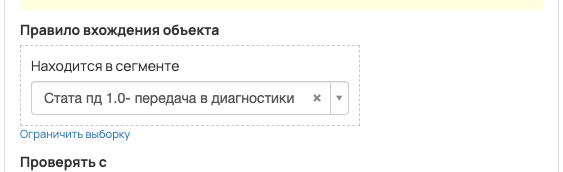
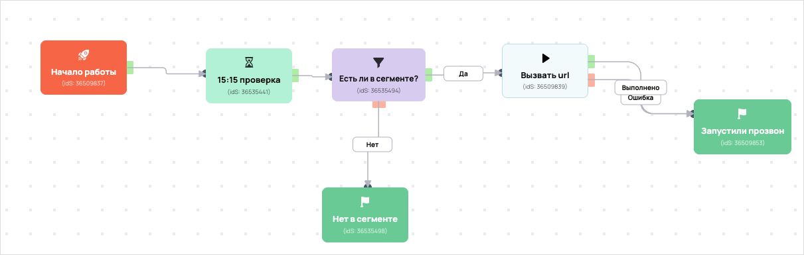

Выгрузка сегмента прозвона
- ID процесса:
2107470 - Объект: Пользователи
- Статус: Не запущен
Описание из GetCourse
30.06.2026. Подробный ход процесса GetCourse:
Главное: В процесс попадают пользователи из выбранных сегментов GetCourse: 33426543.
Процесс работает с объектом GetCourse: Пользователи. Текущий статус процесса: Не запущен.
Как идет процесс внутри GetCourse:
- Схема состоит из 6 блоков и 6 переходов.
Куда передается: Вызовы Vakas в схеме процесса не найдены.
Конец подробного хода процесса GetCourse.
под удаление
Понятное описание процесса
- Процесс работает с объектом GetCourse: Пользователи. Текущий статус процесса: Не запущен.
- На вход попадают данные так: В процесс попадают пользователи из выбранных сегментов GetCourse: 33426543.
- Техническое правило входа в GetCourse: Находится в сегменте.
- Внутри схемы есть дополнительные проверки/ожидания: 1. Основные блоки: «Есть ли в сегменте?».
- В разобранной схеме не найден прямой вызов Vakas. Если процесс должен передавать в amoCRM, его нужно проверить вручную.
Ход процесса в GetCourse
- Схема состоит из 6 блоков и 6 переходов.
- По типам: стартов 1, условий/ожиданий 1, вызовов URL 1, изменений полей 0, финалов 2.
Блоки процесса: что делают и зачем нужны:
- Блок
36509837«Начало работы» (старт). Что делает: Запускает выполнение схемы для объекта, который попал под правило входа процесса. Зачем нужен: Нужен как точка входа: от него GetCourse начинает движение объекта по схеме. Дальше: если результат «Выполнено», идет в «15:15 проверка». - Блок
36535441«15:15 проверка» (таймер). Что делает: Делает паузу или ждет заданное время перед следующим шагом. Зачем нужен: Нужен для задержки между проверкой и передачей, чтобы данные успели появиться или чтобы соблюсти нужный порядок обработки. Дальше: если результат «Выполнено», идет в «Есть ли в сегменте?». - Блок
36535494«Есть ли в сегменте?» (условие). Что делает: Проверяет условие: Находится в сегменте. Зачем нужен: Нужен, чтобы разделить поток: подходящих пользователей/заказы отправить дальше, неподходящих перевести на другую ветку или завершить. Дальше: если результат «Нет», идет в «Нет в сегменте»; если результат «Да», идет в «Вызвать url». - Блок
36509839«Вызвать url» (вызов URL). Что делает: Пишет событие в n8n: event не указан (POST); параметры:name,email,phone,getcourse_user_id,utm_source,utm_medium,utm_campaign,utm_content,utm_term; timeout 10 сек. Зачем нужен: Нужен для служебной фиксации результата работы процесса во внешнем сценарии n8n. Дальше: если результат «Ошибка», идет в «Запустили прозвон»; если результат «Выполнено», идет в «Запустили прозвон». - Блок
36509853«Запустили прозвон» (завершение). Что делает: Завершает ветку процесса после выполненных проверок и действий. Зачем нужен: Нужен, чтобы закрыть текущую ветку и не гонять объект по процессу повторно. Дальше переходов нет: это конечная точка ветки. - Блок
36535498«Нет в сегменте» (завершение). Что делает: Завершает ветку процесса после выполненных проверок и действий. Зачем нужен: Нужен, чтобы закрыть текущую ветку и не гонять объект по процессу повторно. Дальше переходов нет: это конечная точка ветки.
Скриншоты процесса


Откуда: процесс берет объекты по правилу входа «Находится в сегменте».
Что проверяет по пути: перед отправкой в Vakas.
Куда ведет: вызывает внешний URL Vakas.
Логика Vakas и amoCRM
Этот процесс не содержит прямых вызовов vakas-tools.ru/base/... в разобранной схеме, поэтому отдельная Vakas-логика для него не построена.